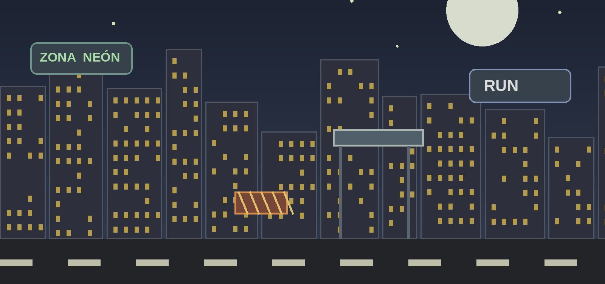
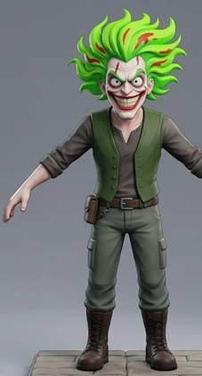
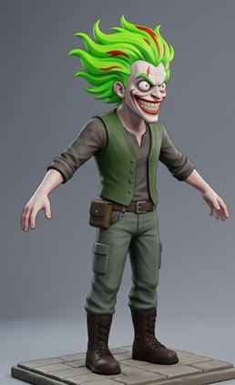
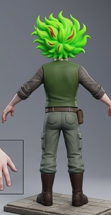

01
ACCIÓN / ENDLESS RUNNER 3D
RunnerUrbano
Lee el camino. Salta. Deslízate. Una carrera de reflejos por una ciudad que no te da tregua.
Explorar juego ↗PORTAL DE GAME DEVELOPMENT
Alexander Condori Nina / Developer
Corre por la avenida o encuentra la salida del Sector Cero. Dos juegos, el mismo personaje y una nueva oportunidad en cada partida.


ELIGE TU RUTA
Conoce la historia y los controles de cada juego. Después, pulsa su botón START para comenzar aquí mismo.
ACCIÓN / ENDLESS RUNNER 3D
Lee el camino. Salta. Deslízate. Una carrera de reflejos por una ciudad que no te da tregua.
Explorar juego ↗ESTRATEGIA / LABERINTO 3D
Recoge la energía, evita a los bumeranes y encuentra la salida. Si te ven, comienza la caza.
Explorar juego ↗La avenida nunca se detiene.
Una metrópolis futurista se ha deteriorado: barricadas, contenedores y estructuras de construcción ocupan una avenida iluminada por neones. El corredor avanza sin detenerse. Su motivación es sobrevivir al caos y superar su propia marca. Su historia se cuenta con cada salto, cada choque y cada nuevo intento.
El personaje corre automáticamente. Identifica si el peligro es bajo o alto.
Salta sobre barricadas y cajas. Agáchate para pasar bajo barras y señales.
La puntuación aumenta al sobrevivir. Llega a 1000 puntos antes de perder las tres vidas.
Alcanza o supera los 1000 puntos.
Cada choque resta una vida. Al perder las tres, termina la carrera.
Unity · WebGL · Tercera persona
Entorno 3D urbano y protagonista de estilo cartoon. Sus animaciones permiten correr, saltar, agacharse y morir.
Los obstáculos bajos y altos aparecen con variación de tiempo y tipo. Los que quedan atrás se retiran de la escena.
La dificultad aumenta con el tiempo. La interfaz comunica puntuación, vidas y resultado.
En espera · El juego solo se carga cuando pulsas START.
Usa el botón START de arriba para entrar.
UNITY WEBGL / TECLADOHaz clic dentro del juego y usa ↑ / ↓. La primera carga puede tardar. Pulsa Esc para salir de pantalla completa.
Si te ven, comienza la caza.
El Sujeto 001 está atrapado en el Sector Cero. Para escapar debe explorar un laberinto vigilado por bumeranes que lo persiguen cuando lo ven. Los núcleos de energía están repartidos por los pasillos y la salida se encuentra en la parte superior. Cada desvío exige decidir entre avanzar hacia el objetivo o alejarse de una persecución.
Muévete por los pasillos y recoge los 36 núcleos. El contador indica cuántos faltan.
Los bumeranes te siguen si te ven. Aprovecha los giros y la distribución del laberinto para alejarte.
Completa la recolección y atraviesa la puerta superior cuando esté abierta. Escapar completa la misión.
Recoge los 36 núcleos y atraviesa la puerta superior abierta.
Evita a los bumeranes: son la amenaza que persigue al Sujeto 001 durante su escape.
Unity · WebGL · Vista elevada
Escenario 3D de pasillos con una vista elevada que permite leer las rutas y localizar elementos.
Los enemigos detectan visualmente al personaje y lo persiguen. Los bumeranes sustituyen a los enemigos del referente clásico Pac-Man.
Un contador sigue los núcleos restantes. La puerta superior es el objetivo de salida y la pantalla inicial explica la misión antes de comenzar.
En espera · El juego solo se carga cuando pulsas START.
Usa el botón START de arriba para entrar.
UNITY WEBGL / TECLADOHaz clic dentro y pulsa Enter; muévete con las flechas. La primera carga puede tardar. Pulsa Esc para salir de pantalla completa.
UN PROTAGONISTA COMPARTIDO
Cabello verde, chaleco y botas. Un personaje cartoon 3D que pasa de los reflejos de la avenida a la exploración del laberinto.


En RunnerUrbano sus animaciones expresan correr, saltar, agacharse y morir. En La Ciudad Sangrienta, el Sujeto 001 recorre los pasillos para reunir energía y escapar.
ANTES DE ENTRAR
Una computadora con teclado, navegador compatible con WebGL y aceleración por hardware. Se recomienda una pantalla de 1280 × 720 o mayor y 4 GB de memoria. Necesitas Internet para descargar los juegos desde Netlify.
Cada juego espera su botón START. Los enlaces del menú solo desplazan la página; no cargan ni inician partidas.
Haz clic dentro del área de juego. En La Ciudad Sangrienta pulsa Enter después de cargar. Para volver al portal, pulsa Tab o haz clic fuera del reproductor.
Espera la descarga inicial y comprueba la conexión. Usa «Volver a cargar» para intentarlo de nuevo. Revisa que WebGL y la aceleración por hardware estén disponibles en tu navegador.
Tras cargar un juego, START cambia a DETENER. Detenerlo descarga el reproductor y pierde la partida actual. Iniciar el otro juego también detiene el anterior para evitar dos sesiones simultáneas.